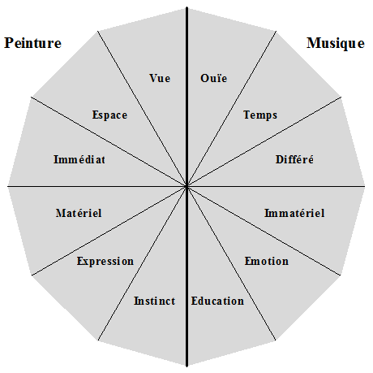

NDLR : Cette chronique est la première partie d'un ensemble diptyque qui étudie les rapports intimes ou distanciés que la Musique entretient avec deux arts opposés : la Peinture et les Arts de la table. L'association peut sembler étrange, elle ne l'est pas tant que cela.
Tout éloigne la Musique de la Peinture et c'est en mettant les divergences en évidence qu'on prend au mieux conscience des spécificités de l'art musical. Au début il semblerait qu'on n'enfonce que des portes ouvertes mais très vite les différences s'accumulent au point de faire réfléchir.

Vue & Ouïe Espace & Temps
La peinture se déploie dans l'espace à deux dimensions, voire à trois dimensions lorsque l'artiste joue sur les reliefs de la matière. L'oeil humain a la capacité d'appréhender quasiment instantanément l'oeuvre, dans sa globalité. En parcourant les salles d'un musée, même à vive allure, il peut se faire rapidement une idée d'ensemble des oeuvres qu'il doit explorer dans l'urgence et de celles qu'il doit tenir en réserve.
La musique se déploie dans le temps. Cette particularité a pour conséquence que ce n'est qu'au terme d'une audition complète que l'oreille et le cerveau qui la relaie peuvent appréhender l'oeuvre. Une part inévitable d'amnésie l'oblige à des écoutes répétées, du moins dans les cas d'une oeuvre complexe. L'écoute domestique permet certes d'échantillonner l'écoute mais le procédé n'offre aucune garantie de fiabilité et il est, de toutes façons, impraticable au concert.
L'observation précédente entraîne des conséquences directement observables quant au répertoire artistique en vogue parmi le public.
La perception immédiate de l'oeil a toujours eu une conséquence favorable sur l'éducation de tous les publics : à quelque époque que ce soit, la peinture moderne a très vite été comprise et acceptée. Aujourd'hui une rétrospective Bacon, Mathieu ou Freud draîne sans douleur toutes les couches de la société.
La complexité musicale est autrement redoutable et l'investissement en temps qu'elle requiert pour être vaincue rebute la majorité des mélomanes les mieux disposés. Un festival Schnittke ou penderecki ne recuiellerait pas un succès comparable d'ailleurs il ne se trouverait aucune société philharmonique pour tenter l'expérience.
Aucune rétrospective picturale ne rebute généralement le public cultivé, même si elle rassemble des oeuvres de création récentes. cet éclectisme est indispensable aux rats de musée sous peine de refaire invariablement les mêmes parcours. Son parcours est assimilé à une promenade de santé intellectuelle qui ne demande aucun effort particulier ni investissement démesuré en temps.
Il n'en va pas du tout de même en musique où toute expérience même ponctuelle prend le tmeps d'une soirée sans la moindre assurance qu'on y comprendra quelque chose. les publics frileux - et ils le sont majoritairement - ne quittent dès lors pas volontiers les parages d'un classicisme rassurant. L'absence de renouvellement du répertoire que l'amateur compense habituellement au niveau de l'interprétation. Ce point est particulièrement net chez les amateurs d'opéras qui se contentent habituellement d'un fond de commerce invariable ce qui les oblige à opérer un transfert de la mudsique vers les à-côtés du spectacle, la mise en scène et évidemment l'interprétation.
Tout tableau est la représentation concrète d'une inspitration d'un artiste-peintre. Celui-ci correspond immédiatement avec son public car il n'a besoin d'aucun intermédiaire pour faire apprécier son oeuvre : celle-ci est immédiatement "consommable".
Une oeuvre musicale est également le résultat d'une inspiration mais elle ne correspond pas immédiatement avec son public qui dans son écrasante majorité est incapable de la lire dans le texte original. Un interprète est indispensable qui a pour mission de traduire la partition écrite en sons audibles.
Une restriction porte cependant sur l'état de conservation de cette oeuvre. Les matériaux utilisés, en particulier les couleurs, vieillissent naturellement plus ou moins bien. Il est bien connu que les peintures de Jan van Eyck ont nettement mieux résisté à l'injure du temps que celles de Léonard de Vinci. Personne ne sait aujourd'hui ce que deviendront les toiles de Vincent van Gogh dans 500 ans. Un travail de restautration peut s'avérer indispensable, en particulier si l'oeuvre subit des dommages physiques, volontaires ou fortuits. Tout restaurateur agit alors comme un intermédiaire qui interprète plus ou moins les directives de son travail. De telles restaurations sont toutefois rares et réservées aux oeuvres essentielles et sérieusement menacées; elles coûtent cher à la collectivité
La seule mésaventure qui puisse affecter une oeuvre musicale est la perte de sa partition autographe. Une fois (re)copiée, elle est en principe définitivement à l'abri d'une destruction irrémédiable. l'histoire ne manque pas d'exemples d'oeuvres musicales ressuscitées après des décennies voire des siècles d'oubli : il suffit qu'un manuscrit réapparraisse pour que l'oeuvre puisse reprendre vie. Evidemment rien ne garantit qu'elle sonnera à nouveau comme elle a sonné par le passé : c'est le travail des musicologues et des interprètes de se pencher sur la restauration et il n'est pas rare que plusieurs versions voient le jour.
Il n'est pas dans les usages qu'un artiste complète l'oeuvre inachevée d'uun collègue éventuellement décédé. La chose est plus courante en musique.
Tous les peintres ne sont pas égaux devant le temps de la conception : on a connu beaucoup d'artistes parfaitement côtés qui peignaient jusqu'à trois toiles par jours. Au bilan de son existence Picasso pouvait faire état d'un catalogue fidèlement tenu à jour et comptant la bagatelle de tableaux.
Une performance similaire est généralement hors de portée d'un musicien : l'écriture dans ses moindres détails d'une oeuvre orchestrale peut prendre des mois d'où la tentation de compléter des oeuvres importantes mais inachevées.
Courants artistiques. Il est tentant de comparer l'état de la peinture et de la musique à toutes les époques de l'histoire de l'histoire de l'art mais cela ne se fait pas de manière uniforme. Certains courants sont similaires et d'autres ne le sont pas du tout. D'une manière générale, la peinture s'est plus systématiquement appliquée à illustrer tous les courants artistiques qui se sont succédés quand la musique en a escamoté voire ignoré certains, surtout à l'époque moderne : l'impressionisme musical existe mais il a presque exclusivement été l'oeuvre d'un seul homme, Claude Debussy. Quant au surréalisme musical, c'est un concept inexistant.
Le dessin est à la peinture ce que la mélodie est à la musique.
.
Le marché de l'art a connu bien des scandales liés à des tentations marchandes confinant à l'escroquerie.
La peinture connaît un phénomène que la musique ignore, celui de la copie. Celle-ci peut être didactique - histoire de se faire la main - ou officiellement commerciale - pour quelques milliers d'euros vous pouvez acheter en toute égalité une copie parfaite du chef-d'oeuvre de votre choix - et dans ces cas réglementés, elle est parfaitement légale. La trentatio nest évidemment de profiter de ce qu'une copie peut être parfaite au point d'abuser un acheteur crédule. C'est l'éternel problème posé par la différence monétaire entre deux objets a priori indiscenrnables, à l'oeil nu en tous cas.
Personne n'a jamais copié l'oeuvre musicale d'un Maître, tout au plus l'a-t-il transcrite de sa main, à des fins didactiques. Le métier de faussaire musical n'existe pas et il vaut la peine de réfléchir aux raisons profondes de cette particularité. Certes le catalogue des symphonies de Beethoven est parfaitement connu et tout musicien qui prétendrait avoir retrouvé le manuscrit d'une dixième symphonie serait immédiatement démasqué y compris par le mélomane inexpert : à part qu'elle est une liasse de papier, une partition n'est pas un objet comme l'est un tableau, elle est porteuse d'affects impossibles à copier .